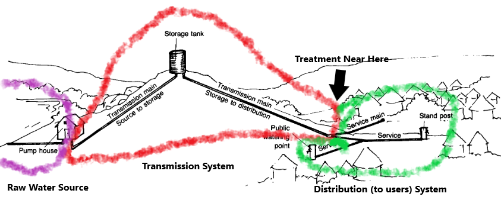

2.1 Raw Water Transmission Design#
Course Website
Readings#
Videos#
Lesson Outline#
Transmission Systems#
The transmission system’s function is to transport water from a source to a terminal reservoir if any, and to the distribution input point. Water conduits for such transmission may be canals, aqueducts or tunnels, free-flow pipelines, or pressure pipelines. The transmission of water will either be by gravity or pumping. Pressure pipeline is generally the type of water conduit used for water supply transmission systems.
The figure below generalizes the transmission system. Water from a source is transmitted to the distribution system.

There may or may not be intermediate storage. It is usually un-economical to transport treated (potable) water over long distances, so the drawing assumes treatment near the distribution system. There would likely be terminal storage at the treatment works (terminal to the transmission pipeline).
Determination of Transmission Pipe Size#
The sizing of the transmission main is dependent on the total storage capacity and the way the supply is transmitted to the distribution system. The main should have at least the carrying capacity to supply water at a rate equivalent to the maximum day demand of the system for a given design year.
As a rule of thumb, for transmission by pumping, it is advisable to assume a preliminary head loss (\(h_L\)) of about \(5.0 ~\frac{m}{km}\) of pipeline. (As much as possible, head loss should be limited to \(10.0 ~\frac{m}{km}\) of pipeline for transmission by pumping). For a gravity system with a considerable elevated source (e.g. highland springs), the transmission line could afford to have higher head losses as long as the remaining pressure head at the downstream end is sufficient for the distribution system’s needs. For a gravity system with source elevation that is not much higher than the distribution system, the head losses are lowered to attain just sufficient pressure head in the distribution system.
Maximum Pressure#
The pipe material should be selected to withstand the highest possible pressure that can occur in the pipeline. For a gravity system, the worst-case scenario is for pressure to be at its maximum during shut-off at the downstream end when the static pressure is too high. For the transmission line design, a maximum computed HGL based on a minimum supply rate equivalent to 0.3 times the average day demand should be examined. However, practical experience from the ground suggests that there is no need to limit the maximum allowable pressure to 60m head. Instead, considerations should be given on the basis of the economic grounds. However, in any circumstances where the maximum allowable pressure be exceeded, break pressure tanks should be installed along the main. The break pressure tank will limit the static pressure by providing an open water surface at certain points of the transmission line. Design of transmission line is usually undertaken with the use of hydraulic computer software, which is discussed elsewhere.
Design Considerations#
The pipeline should be designed to withstand the following;
Internal test pressure of water,
Water hammer (positive surge),
Vacuum and negative surge,
External pressures when laid below ground (overburden and surcharge),
Conveyance water temperature (thermoplastic pipes),
Maximum working temperature (ferrous pipe coatings),
Temperature stresses when laid above ground,
Flexural stresses when laid over supports, constructed at intervals or on bridges,
Longitudinal stresses due to flow at tees, tapers and bends,
Foundation reaction depending upon the nature of support,
Handling stresses,
For flexible pipes (thermoplastic and steel) the following criteria should be met;
The pipe deflection (out-or-roundness) must not exceed the allowable limit;
The combined stress or stain in the pipe wall must not exceed the allowable limit, and
The factor of safety against buckling must be adequate;
For semi-rigid pipes (ductile iron) the following criteria should be met:
The pipe deflection (out-or-roundness) should not exceed the allowable limit;
The pipe wall bending stress should not exceed the allowable limit.
Appurtenances For Transmission Mains#
Pipe fittings are those specially manufactured fittings used to facilitate changes in direction, changes in diameter, the making of branches etc. to the pipeline. Further, fittings are needed to install valves, meters and other mechanical devices and to allow for the change from one pipe material to another or diameter changes.
Valves#
One of the most important types of appurtenances is the valve. A valve is a device that can be opened and closed to different extents (called throttling) to vary its resistance to flow, thereby controlling the movement of water through a pipeline. Valves can be classified into five general categories as follows:
Isolation Valves#
Perhaps the most common valve in the water distribution system is the isolation valve, which can be manually closed to block the flow of water. Isolation valves include gate valves (the most popular type), butterfly valves, globe valves, and plug valves.
Check Valves#
Check valves, also called directional valves, are used to ensure that water can flow only in one direction through a pipeline.
Float Valves#
Many water utilities employ devices called float valves at the point where a pipeline enters a tank. When tank level rises to a specified upper limit, the valve closes to prevent any further flow from entering, thus eliminating overflow.
Air Release Valves#
These valves are provided in system high points, where trapped air settles, and at changes in grade, where pressures are most likely to drop below ambient or atmospheric conditions.
Pressure Reducing Valves#
Pressure reducing valves (PRVs) throttle automatically to prevent the downstream hydraulic grade from exceeding a set value and are used in situations where high downstream pressures could cause damage.
A related structure is a break-pressure tank (BPT) that enable control of head and pressure in the system when you have high elevation differences while going down the pipeline.
Note
The tank in the sketch is a header tank, not a break pressure tank.
Washout valves#
To be provided at the lowest points for the purpose of flushing the pipeline.
Pressure relief valves#
At same locations as washout valves to release excess pressure to protect the pipeline. Also called “blow-out” valves.
Flow Control Valves#
A flow control valve regulates the flow or pressure of a fluid. Control valves normally respond to signals generated by independent devices such as flow meters or temperature gauges
Other Fittings#
Fittings are installed in the pipelines for the following purposes;
To connect the same type and size of pipe
Union: Unions are provided in the pipeline for ease of repair. Unions are usually installed at 60-meters intervals on straight pipelines.
Coupling: Used in joining 2 pipes of the same diameter. It is cheaper than unions.
To connect two pipes of different sizes
Reducers are used when there is a reduction of pipe size and include bushes and elbows for galvanized iron pipes. Also available are reducing elbows, tees and crosses.
To change the direction of flow
Elbow;
To divide the flow:
into two - Tee
to divide the flow into three - Cross.
To stop the flow
caps, plugs and blind flanges.